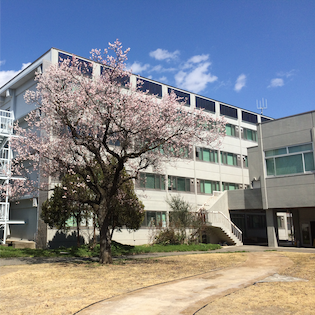

藤井研究室は，2019年4月に発足した信州大学
工学部
機械システム工学科
に所属する研究室です．
私たちは，トポロジー最適化や有限要素法および関連する構造モデリングなど， 数値シミュレーションやCAD/CAEに関する研究に取り組んでいます． また，それらを駆使した新しい機能を発現する構造のインバースデザインにも力をいれ， クローキング（透明マント，光学迷彩）や ロケーションカムフラージュ（位置迷彩）などの構造設計を行っています． これらの研究を進める過程でプログラミング技術や，マルチコア計算機を用いるための並列計算の技法を学び， 数式に基づいて最適設計コードの開発を推進します．
当研究室では，多最適化問題を解くことを困難にする性質（多峰性や次元の呪い）を含む構造最適化において， それら課題の解決を目指しています． そして，これまでに無い面白い機能の実現に貢献できるよう，日々懸命に，地道に，そして何より楽しく研究しています．
私たちは，トポロジー最適化や有限要素法および関連する構造モデリングなど， 数値シミュレーションやCAD/CAEに関する研究に取り組んでいます． また，それらを駆使した新しい機能を発現する構造のインバースデザインにも力をいれ， クローキング（透明マント，光学迷彩）や ロケーションカムフラージュ（位置迷彩）などの構造設計を行っています． これらの研究を進める過程でプログラミング技術や，マルチコア計算機を用いるための並列計算の技法を学び， 数式に基づいて最適設計コードの開発を推進します．
当研究室では，多最適化問題を解くことを困難にする性質（多峰性や次元の呪い）を含む構造最適化において， それら課題の解決を目指しています． そして，これまでに無い面白い機能の実現に貢献できるよう，日々懸命に，地道に，そして何より楽しく研究しています．


基本的にやる気のある人・実力をつけたい人を伸ばします．
また，（大学院2年+4年生1年間の）計3年間を基本としてその中でチャレンジングな研究課題を学生にも任せます．
難しそうな場合は研究テーマを変更することもあります．
毎週の研究報告プレゼンテーション（各学年1人/週）
学会発表（計算力学講演会，設計工学・システム部門講演会，など）
学術論文執筆（成果の出た人のみ）
毎週の研究報告プレゼンテーション（各学年1人/週）
学会発表（計算力学講演会，設計工学・システム部門講演会，など）
学術論文執筆（成果の出た人のみ）